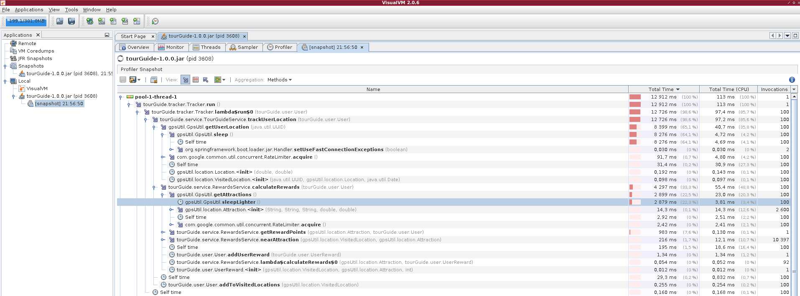
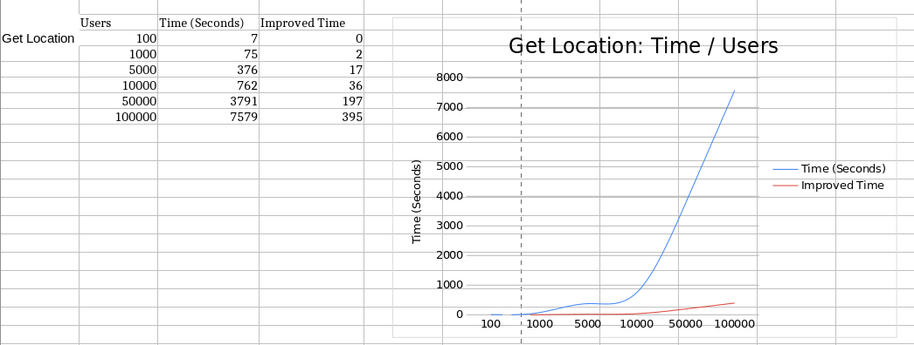

4. Résolution des problèmes¶
Dans ce chapitre, nous allons reprendre les problèmatiques exposées au §1.1.
Pour chacune d’entre elles, nous verrons la démarche suivie pour la résolution de ces dernières, les changements et tests mis en oeuvre, ainsi que le résultat obtenu à la suite des refactorisations de code.
4.1. Préambule¶
La résolution des problèmes rencontrés a été effectuée avec l’outil Jira, pour suivre une démarche agile. Chaque sprint (épic) corresponds à une étape de correction, lesquels sont constitués de tickets permettant de détailler chaque point important du processus d’amélioration de l’application.
{kind=link}
4.2. Mise à niveau de l’application¶
Avant de commencer, il a fallu mettre à jour l’application et ses dépendances au moyen de Gradle. A aujourd’hui, l’application utilise Gradle version 7.2 ce qui permet de rendre visible toutes les tasks disponibles pour ce projet (ce qui n’était pas le cas avec l’ancienne version…)
Les versions de SpringBoot et de Junit ont également été upgradée de sorte de pouvoir utiliser les dernières annotations et, par exemple, utiliser des test paramétrés plus facilement…
Nous sommes aussi passé à la jdk 11 pour pouvoir utiliser JVisualVM et profiler notre application pour résoudre les lenteurs relatées par les utilisateurs.
4.2.1. Problèmatique rencontrée¶
Une fois l’application upgradée et lancée , l’exception suivante est apparue immédiatement :
java.lang.NumberFormatException: For input string: "-166,341300"
at sun.misc.FloatingDecimal.readJavaFormatString(FloatingDecimal.java:2043)
at sun.misc.FloatingDecimal.parseDouble(FloatingDecimal.java:110)
at java.lang.Double.parseDouble(Double.java:538)
at gpsUtil.GpsUtil.getUserLocation(GpsUtil.java:30)
at tourGuide.service.TourGuideService.trackUserLocation(TourGuideService.java:87)
at tourGuide.TestRewardsService.userGetRewards(TestRewardsService.java:35)
4.2.2. Explication¶
Lors de l’appel à la methode trackUserLocation() de TourGuideService, on utilise la methode getUserLocation() de GpsUtil qui parse des longitudes et latitudes sous forme de String mais avec une virgule puisque la Locale de notre application n’étant pas definie est,par défaut, en français (ex: 31,765747).
4.2.3. Résolution¶
Nous avons setter la user Locale en anglais pour avoir des doubles sous forme de string avec un point et non une virgule. Ainsi le parse en double des longitudes et latitudes ne lève plus d’exception.
Ajout donc dans application.properties de:
spring.web.locale=en_EN
4.3. Amélioration des performances¶
Dans cette section, nous parlons de l’amélioration des performances de l’application en général.
Que ce soit pour l’appel à GspUtil ou à RewardsCentral, nous avons constaté une lenteur du à l’appel de certaines méthodes qui renvoient une réponse après un certain temps (utilisation de la methode sleep() pour simuler ce temps de réponse).
4.3.1. Problèmatique rencontrée¶
Tout d’abord, afin de déterminer au mieux les méthodes qui ralentissaient l’application, nous avons utiliser l’application JVisualVM pour trouver et vérifier d’ou venaient ces lenteurs.
Ci dessous, une impression d’écran de JVisualVM profilant notre application:
{kind=link}
Nous avons donc pu constater que les lenteurs provenaient donc des méthodes suivantes:
getUserLocation() de GpsUtil
calculateRewards() de RewardsService
4.3.2. Explication¶
Ces lenteurs contatées par les utilisateurs s’explique par le fait que l’application appelait ces méthodes de manière séquentielle et que ces dernières renvoyaient leur retour avec un temps de réponse aléatoire plus ou moins long (méthode sleep() de substitution).
Par conséquent, plus le nombre d’utilisateurs devenait important et plus le temps de réponse l’était aussi (cf les graphes de performances ci dessous avant refactorisation du code)
4.3.3. Résolution¶
Après avoir donc identifier les méthodes fautives, nous sommes passés à l’étape de la résolution…
4.3.3.1. Modification de l’architecture existante¶
Pour respecter la responsabilité unique du principe SOLID et l’architecture MVC en 3 couches distinstes, nous avons crée 3 services dédiés uniquement à la gestion des appels au librairies GspsUtil , RewardsCentral et TripPricer.
Ci dessous, respectivement les trois services nouvellement crés:
GpsUtilService
RewardsService
TripPricerService
En outre, le service TourGuideService, au démarrage de l’application, instancie respectivement ces trois services.
4.3.3.2. Utilisation de l’API Concurrency de Java 8¶
Pour palier aux problèmes de lenteur lors de l’appel aux méthodes getUserLocation() et calculateRewards(), nous avons utilisé l’API Concurrency de Java 8, de sorte à plutôt effectuer des « requêtes asynchrones » que de faire, des appels directs aux méthodes incriminées de manière séquentielle…
Ainsi, en utilisant des CompletableFutures pour pouvoir gérer simplement le retour des méthodes, l’application utilise donc maintenant un paragdime concurrentiel. Ce qui permet d’améliorer nettement, la rapidité de cette dernière, quelque soit le nombre d’utilisateurs…
De plus, l’utilisation des CompletableFutures , nous permet aussi, contrairement aux Futures, de pouvoir plus facilement enchainer d’autres taches, une fois le retour acquis et cela, grâce aux méthodes prédéfinies de l’interface CompletionStage
Pour pouvoir utiliser la concurrence, il a fallu modifier donc, quelque peu les services:
Ajout d’une instance d’ExecutorService pour gérer correctement les threads lancés par les CompletableFutures
Utilisation d’un CompletableFuture pour chaque appel aux méthodes incriminées
Gestion des retours asynchrones avec enchaînement d’autres actions à effectuer avec ou sans répoonses.
Gestion de l’accés a des ressources partagées entre les différents threads
Note
Concernant l’instanciation des ExecutorService, le nombre de threads a été calulé en respectant la formule suivante:
En java, pour obtenir le nombre de processeurs disponible sur une machine , il suffit d’utiliser:
Runtime.getRuntime().availableProcessors();
Sachant que notre ordinateur posséde 6 processeurs et que le temps de réponse pour localiser un utilisateur et lui attribuer des rewards est de 100 ms +1000ms au maximum (déterminé en regardant les methodes sleep() des librairies), c’est pour cela que dans GspUtilService nous avons un thread Pool de 6006
@Service
public class GpsUtilService {
private GpsUtil gpsUtil;
private Logger logger = LogManager.getLogger("testPerformance");
public final ExecutorService gpsExecutorService = Executors.newFixedThreadPool(6006);
public GpsUtilService(GpsUtil gpsUtil) {
this.gpsUtil = gpsUtil;
}
4.3.3.3. GpsUtilService¶
Les modifications de l’appel à l’ancienne méthode getUserLocation() de GpsUtils se sont fait en deux étapes:
Refactorisation de TourGuideService:¶
on utilise directement une instance d’ExcecutorService tourGuideServiceExecutor pour lancer un thread permettant d’appeler la nouvelle méthode getLocation() de notre GpsUtilService. Ceci est particulièrement intéressant lors de l’éxecution du test de performance, puisque cela permet, au travers des logs, de distinguer correctement les appels a getLocation() provenant soit du Tracker, soit de TourGuideService même.
/**
* Track the location of a user
*
* @param user user to be tracking
*/
public void trackUserLocation(User user) {
try {
tourGuideServiceExecutor.submit(() -> {
logger.debug("\033[32m - trackUserLocation({})", user.getUserName());
gpsUtilService.getLocation(user, this);
});
} catch (Exception e) {
e.printStackTrace();
}
}
Refactorisation de GspUtilService:¶
L’appel a la méthode getUserLocation() de GspUtils se fait maintenant en utilisant une CompletableFuture qui avec sa méthode supplyAsync() récupére, de manière asynchrone, le retour de getUserLocation().
public void getLocation(User user, TourGuideService tourGuideService) {
CompletableFuture.supplyAsync(() -> {
logger.debug("\033[33m - gpstUtils.getUserLocation({})", user.getUserName());
return gpsUtil.getUserLocation(user.getUserId());
}, gpsExecutorService).thenAccept(location -> {
logger.debug("\033[33m - tourGuideService.saveTrackedUserLocation({},{})", user.getUserName(), location);
tourGuideService.saveTrackedUserLocation(user, location);
});
Une fois le retour récupéré, on enchaîne avec la suite du process implémenté dans la méthode de TourGuideService saveTrackedUSerLocation():
Ajouter la dernière localité visitée a l’historique de l’utilisateur
Caluler les points de récompense pour cette visite
Mettre à jour la HasMap trackingUsersProgress partagée avec le Tracker pour définir que l’utilisateur a bien été « localisé »
/**
* Add the last Tracked location to user's list of visited Locations, Calulate the rewards for user
* visited location and add it ( point & informations) to his userRewards update the map
* UserTrackingProgress to informe the tracker of asynchronous progression of tracking
*
* @param user the user to be tracking
* @param visitedLocation it's last visited location
*/
public void saveTrackedUserLocation(User user, VisitedLocation visitedLocation) {
user.addToVisitedLocations(visitedLocation);
rewardsService.calculateRewards(user);
tracker.updateUserTrackingProgress(user);
}
Une fois ces modifications appliquées, notre application maintenant fonctionne en utilisant un paragdime concurrentiel.
Cependant, étant donné que Tracker et TourguideService (notamment pendant les tests de performances) utilisent tous les deux, de manière asynchrone, une même ressource qui n’est autre que la liste des localités visitées pour chaque utilisateur, il a fallu introduire dans la classe User un ReentrantLock pour gérer correctement le partage de cette ressource entre l’instance de Tracker et de TrouguideService.
Ci dessous, l’implémentation du ce ReentrantLock dans User.java:
public class User {
private final UUID userId;
private final String userName;
/.../
private Lock userVisitedLocations = new ReentrantLock();
/.../
public void addToVisitedLocations(VisitedLocation visitedLocation) {
userVisitedLocations.lock();
try {
visitedLocations.add(visitedLocation);
} finally {
userVisitedLocations.unlock();
}
public List<VisitedLocation> getVisitedLocations() {
userVisitedLocations.lock();
try {
return visitedLocations;
} finally {
userVisitedLocations.unlock();
}
}
public void clearVisitedLocations() {
userVisitedLocations.lock();
try {
visitedLocations.clear();
} finally {
userVisitedLocations.unlock();
}
}
}
4.3.3.4. RewardsService¶
Pour l’appel à RewardsCentral, nous avons refactorisé de la même manière la méthode calculateRewards() de sorte, à également, faire appel à cette dernière de manière asynchrone. N’ayant pour cette fois, pas besoin dans les logs de déterminer quelle instance appelle cette méthode, nous n’avons pas fait appel à un thread dans TourguideService…
Refactorisation de RewardsService:¶
La méthode calculateRewards() a été, pour faciliter sa lecture, cinder en deux partie:
une première partie pour vérifier si l’utilisateur a visité une localité proche d’une attraction existante: la méthode calculateRewards()
une seconde partie pour récupérer les points de récompense suite à cette visite proche d’une attraction et fournir a l’utilisateur une instance de Rewards comprennant la localité visitée , l’attraction proche de cette dernière et le nombre de points de récompense obtenus: la méthode setUserRewards()
public void calculateRewards(User user) {
logger.debug("\033[35m - calculateRewards({}) ", user.getUserName());
CopyOnWriteArrayList<VisitedLocation> userLocations = new CopyOnWriteArrayList<>(user.getVisitedLocations());
List<Attraction> attractions = gpsUtilService.getAttractions();
for (VisitedLocation visitedLocation : userLocations) {
for (Attraction attraction : attractions) {
if (user.getUserRewards().stream().filter(r -> r.attraction.attractionName.equals(attraction.attractionName)).count() == 0) {
if (nearAttraction(visitedLocation, attraction)) {
logger.debug("\033[35m - setUserRewards({}, {}, {}) ", attraction.attractionName, visitedLocation, user.getUserName());
setUserRewards(attraction, visitedLocation, user);
}
}
}
}
}
private void setUserRewards(Attraction attraction, VisitedLocation visitedLocation, User user) {
CompletableFuture.supplyAsync(() -> {
logger.debug("\033[35m - getRewardPoints({}, {}) ", attraction.attractionName, user.getUserName());
return rewardsCentral.getAttractionRewardPoints(attraction.attractionId, user.getUserId());
}, rewardsExecutorService).thenAccept(rewardsPoint -> {
logger.debug("\033[35m - addUserReward({}, {}, {}, {}) ", user.getUserName(), visitedLocation, attraction.attractionName, rewardsPoint);
user.addUserReward(new UserReward(visitedLocation, attraction, rewardsPoint));
});
}
Note
Concernant la liste de localité visitées de l’utilisateur, une fois la refactorisation du code effectuée, nous avons constaté qu’une exception de concurence était levée lors de l’appel à calculateRewards(). Cette exception apparaissait car plusieurs threads voulaient parcourir avec un iterator la même liste de localités visitées userLocation en même temps. Pour résoudre le problème nous avons changer le type de userLocation ArrayList en CopyOnWriteArrayList. Ainsi chaque thread lorsqu’il appelle la méthode calculateRewards(), travaille non plus sur l’unique liste userLocation mais sur une copie.
4.3.4. Refactorisation des tests¶
Toutes ces modifications apportés au code pour implémenter un paragdime concurrentiel, ont forcémenent fait passer les tests en échecs. Nous avons donc procéder à une refactorisation de ces derniers…
4.3.4.1. HighVolumeGetLocation()¶
ci dessous, les principaux changements effectués:
Modification du constructeur de TourguideService. Ce dernier prends en arguments maintenant les trois services décris plus haut soit:GpsUtilService, RewardsService et TripPricerService
Ajout d’une interruption du main thread pour chaque utilisateur une fois l’appel à la méthode trackUserLocation() de TourGuideService terminée car il faut attendre que l’application ait bien attribué 5 localités visitées pour chacun d’entre eux ( 4 localités attribué par le Tracker et 1 par l’appel de tourGuideService) avant d’arreter l’application et vérifier le temps obtenu.
public void highVolumeTrackLocation() {
// Users should be incremented up to 100,000, and test finishes within 15
// minutes
InternalTestHelper.setInternalUserNumber(10);
System.setProperty("logFileName", "highVolumeTrackLocation-" + InternalTestHelper.getInternalUserNumber());
LoggerContext ctx = (LoggerContext) LogManager.getContext(false);
ctx.reconfigure();
Logger logger = LogManager.getLogger("testPerformance");
Logger rootLogger = LogManager.getRootLogger();
GpsUtilService gpsUtilService = new GpsUtilService(new GpsUtil());
RewardsService rewardsService = new RewardsService(gpsUtilService, new RewardCentral());
TripPricerService tripPricerService = new TripPricerService(new TripPricer());
rootLogger.info("----------------------HightVolumeTrackLocation with {} users-----------------------\t", InternalTestHelper.getInternalUserNumber());
TourGuideService tourGuideService = new TourGuideService(gpsUtilService, rewardsService,tripPricerService);
StopWatch stopWatch = new StopWatch();
stopWatch.start();
List<User> allUsers = tourGuideService.getAllUsers();
for (User user : allUsers) {
logger.debug("\033[36m - tourGuideService.trackUserLocation({}) ", user.getUserName());
tourGuideService.trackUserLocation(user);
}
for (User user : allUsers) {
while (user.getVisitedLocations().size() < TourGuideService.INITIAL_NUMBER_OF_VISITED_LOCATIONS +1) {
try {
TimeUnit.MILLISECONDS.sleep(100);
} catch (InterruptedException e) {
e.printStackTrace();
}
}
}
stopWatch.stop();
tourGuideService.addShutDownHook();
rootLogger.info("highVolumeTrackLocation: Time Elapsed: {} seconds", TimeUnit.MILLISECONDS.toSeconds(stopWatch.getTime()));
assertTrue(TimeUnit.MINUTES.toSeconds(15) >= TimeUnit.MILLISECONDS.toSeconds(stopWatch.getTime()));
}
4.3.4.2. HighVolumeGetRewards()¶
Ci dessous, les principaux changements effectués:
Modification du constructeur de TourguideService. Ce dernier prends en arguments maintenant les trois services décris plus haut soit:GpsUtilService, RewardsService et TripPricerService
Suppression de l’appel à la méthode calculateRewards() de RewardsService car elle est inutile puisque lors de l’instanciation de tourGuidesService, le tracker tourne déjà. Il suffit simmplement, pour chaque utilisateur, de vider la liste des localités visitées , ajouter une nouvelle locatisation (ici une attraction pour vérifier que l’on ait bien des rewards points attribués a la fin) et laisser le tracker faire son travail.
Ajout d’une interruption du main thread pour attendre que tous les utilisateurs ont bien reçu des rewards points.
@Test
public void highVolumeGetRewards() {
// Users should be incremented up to 100,000, and test finishes within 20
// minutes
InternalTestHelper.setInternalUserNumber(10);
System.setProperty("logFileName", "highVolumeGetRewards-" + InternalTestHelper.getInternalUserNumber());
LoggerContext ctx = (LoggerContext) LogManager.getContext(false);
ctx.reconfigure();
Logger logger = LogManager.getLogger("testPerformance");
Logger rootLogger = LogManager.getRootLogger();
GpsUtilService gpsUtilService = new GpsUtilService(new GpsUtil());
RewardsService rewardsService = new RewardsService(gpsUtilService, new RewardCentral());
TripPricerService tripPricerService = new TripPricerService(new TripPricer());
rootLogger.info("----------------------highVolumeGetRewards with {} users-----------------------", InternalTestHelper.getInternalUserNumber());
StopWatch stopWatch = new StopWatch();
stopWatch.start();
TourGuideService tourGuideService = new TourGuideService(gpsUtilService, rewardsService,tripPricerService);
Attraction attraction = gpsUtilService.getAttractions().get(0);
List<User> allUsers = tourGuideService.getAllUsers();
allUsers.forEach(u -> {
VisitedLocation firstAttraction = new VisitedLocation(u.getUserId(), attraction, new Date());
logger.debug("\033[36m - addToVisitedLocations({}) to user: {} ", attraction.attractionName, u.getUserName());
u.getVisitedLocations().clear();
u.addToVisitedLocations(firstAttraction);
});
for (User user : allUsers) {
while (user.getUserRewards().isEmpty()) {
try {
TimeUnit.MILLISECONDS.sleep(100);
} catch (InterruptedException e) {
e.printStackTrace();
}
}
}
for (User user : allUsers) {
assertTrue(user.getUserRewards().size() > 0);
}
stopWatch.stop();
tourGuideService.addShutDownHook();
rootLogger.info("highVolumeGetRewards: Time Elapsed: {} seconds", TimeUnit.MILLISECONDS.toSeconds(stopWatch.getTime()));
assertTrue(TimeUnit.MINUTES.toSeconds(20) >= TimeUnit.MILLISECONDS.toSeconds(stopWatch.getTime()));
}
4.3.4.3. Tests des Services¶
Nous avons également refactorisé ces derniers essentiellement pour RewardsService et TourguideService. Voici ci dessous les principaux changements:
Modification du constructeur de TourguideService. Ce dernier prends en arguments maintenant les trois services décris plus haut soit:GpsUtilService, RewardsService et TripPricerService
Utilisation de l’API Awaitility pour permettre de faire attendre le main thread plus proprement jusqu’à ce que toutes les opérations asynchrones soit terminées.
Exemple :
@Test
public void getUserLocation() throws InterruptedException {
InternalTestHelper.setInternalUserNumber(0);
System.setProperty("logFileName", "getUserLocation");
LoggerContext ctx = (LoggerContext) LogManager.getContext(false);
ctx.reconfigure();
Logger rootLogger = LogManager.getRootLogger();
GpsUtilService gpsUtilService = new GpsUtilService(new GpsUtil());
RewardsService rewardsService = new RewardsService(gpsUtilService, new RewardCentral());
TripPricerService tripPricerService = new TripPricerService(new TripPricer());
rootLogger.info("---------------------- Test : getUserLocation -----------------------");
TourGuideService tourGuideService = new TourGuideService(gpsUtilService, rewardsService, tripPricerService);
User user = new User(UUID.randomUUID(), "jon", "000", "jon@tourGuide.com");
tourGuideService.trackUserLocation(user);
// while (user.getLastVisitedLocation() == null) {
// TimeUnit.MILLISECONDS.sleep(100);
// }
Awaitility.await().until(() -> user.getLastVisitedLocation() != null);
tourGuideService.addShutDownHook();
assertTrue(tourGuideService.getUserLocation(user).userId.equals(user.getUserId()));
}
4.3.4.4. Test du controller¶
Afin d’obtenir une couverture acceptable et s’assurer de quelconque regréssion de code, un test d’intégration a également été conçu pour s’assurer du bon fonctionnement du rest API.
Ce dernier comporte aussi des tests paramétrés pour vérifier notamment dans les réquètes POST que les données d’entrée du body respectent correctement les contraintes de validation exposées dans le classes DTO..
Tous les endpoints ont également été testés avec l’application postman.
Exemple:
private static Stream<Arguments> invalidUserPreferences() {
return Stream.of(
Arguments.of(new UserPreferencesDTO(-1, "USD", 0, 100, 1, 10, 1, 1)),
Arguments.of(new UserPreferencesDTO(12345, "USD", 0, 100, 1, 10, 1, 1)),
Arguments.of(new UserPreferencesDTO(1, null, 0, 100, 1, 10, 1, 1)),
Arguments.of(new UserPreferencesDTO(1, "", 0, 100, 1, 10, 1, 1)),
Arguments.of(new UserPreferencesDTO(1, "USD", -1, 100, 1, 10, 1, 1)), Arguments.of(new UserPreferencesDTO(1, "USD", 12345, 100, 1, 10, 1, 1)),
Arguments.of(new UserPreferencesDTO(1, "USD", 12, -1, 1, 10, 1, 1)), Arguments.of(new UserPreferencesDTO(1, "USD", 1234, 10000, 1, 10, 1, 1)),
Arguments.of(new UserPreferencesDTO(1, "USD", 1234, 100, -1, 10, 1, 1)), Arguments.of(new UserPreferencesDTO(1, "USD", 0, 1, 10000, 10, 1, 1)),
Arguments.of(new UserPreferencesDTO(1, "USD", 0, 100, 1, -1, 1, 1)), Arguments.of(new UserPreferencesDTO(1, "USD", 0, 100, 1, 10000, 1, 1)),
Arguments.of(new UserPreferencesDTO(1, "USD", 0, 100, 1, 1, -1, 1)), Arguments.of(new UserPreferencesDTO(1, "USD", 0, 100, 1, 1, 10000, 1)),
Arguments.of(new UserPreferencesDTO(-1, "USD", 0, 100, 1, 1, 1, -1)), Arguments.of(new UserPreferencesDTO(1, "USD", 0, 100, 1, 1, 1, 10000))
);
}
@ParameterizedTest
@Order(12)
@MethodSource("invalidUserPreferences")
public void setUserPreferences_whenNotValidInput_thenReturn400(UserPreferencesDTO userPreferences) throws Exception {
System.setProperty("logFileName", "setUserPreferences-InvalidBody");
LoggerContext ctx = (LoggerContext) LogManager.getContext(false);
ctx.reconfigure();
rootLogger = LogManager.getRootLogger();
rootLogger.info("---------------------- endPoint : /setUserPreferences - invalid Body : \n{} -----------------------", userPreferences.toString());
MvcResult result = mockMvc.perform(post("/setUserPreferences")
.contentType(MediaType.APPLICATION_JSON)
.content(gson.toJson(userPreferences))
.param("userName", "internalUser0"))
.andExpect(status().isBadRequest()).andDo(print()).andReturn();
assertThat(result.getResolvedException()).isInstanceOf(MethodArgumentNotValidException.class);
assertThat(result.getResponse().getContentAsString()).contains("invalid data");
rootLogger.info("\033[32m - Response error message: {}", result.getResponse().getContentAsString());
rootLogger.info("\033[32m - Response status: {} \n", result.getResponse().getStatus());
}
4.3.5. Amélioration des performances obtenue¶
Pour vérifier et controller les améliorations de performances de l’application, nous avons, comme il a été demandé, sauvegardé les temps de réponse nouvellement obtenus en fonction de nombre d’utilisateurs connectés. On ne peut que constater le réel gain de temps pour obtenir soit une localisation soit une récompense.
Nous avons également mis en place un système de logs précis, en utilsant log4j2, pour pouvoir voir le résultat des tests individuellement et surtout vérifier le comportement asynchrone des différents threads…
4.3.5.1. Graphes de performances¶
Ci dessous, le résultat sous forme de graphe du fichier excel Graphiques et métriques des performances de TourGuide que vous retrouverez dans le Gitlab du projet:
{kind=link}
{kind=link}
4.3.5.2. Systèmes de Logs¶
En mettant en place une configuration personnalisée avec log4j2 pour notre application, vous trouverez un répertoire de logs contenant respectivement tous les logs des tests exécutés dans le répertoire /logs à la racine.
Ci dessous , le répertoire logs déployé une fois tous les tests effectués et un exemple de log highVolumeGetRewards-5_2023-06-18.10:43.log:
{kind=link}
{kind=link}
4.4. Correction des défauts signalés¶
4.4.1. Problèmatiques rencontrées¶
Comme vu dans le §1.1 , les utilisateurs ont signalé plusieurs défauts au sein de notre application:
Certains tests unitaires échouent par intermittence
Les offres de voyage ne correspondaient pas exactement à leurs préférences, par exemple au niveau du nombre d’enfants ou de la durée du séjour.
Les recommandations d’attractions touristiques ne sont pas soit reçues par les utilisateurs ou ne sont pas pertinentes.
4.4.2. Test unitaires en échecs¶
Comme décrit plus haut, une fois les modifications apportées à notre application pour utiliser la concurrence, tous les tests ont été refactorisés pour passer avec succés.
Par conséquent, nous ne constatons plus d’échec sur aucun test.
4.4.3. TripDeals non pertinantes¶
4.4.3.1. Explication¶
En effet, force est de constater que les offres de voyage ne pouvaient pas en l’état actuel prendre en compte les préférences d’un utilisateur. Lors du démarrage de l’application, chaque userPreferences était initialisé avec des valeurs par défaut et il n’existait pas de endpoint permettant de modifier ces dernières.
Par conséquence, l’utilisateur ne pouvait pas obtenir une offre de voyage respectant ses préférences…
4.4.3.2. Résolution¶
Nous avons donc créer deux endpoints pour notre application:
un endpoint « getUserPreferences » en GET pour que chaque utilisateur puisse visualiser ses préférences
un endpoint « setUserPreferences » en POST pour que chaque utilisateur puisse modifier ses préférences
Pour celà, nous avons créer une classe DTO UserPreferencesDTO.java qui corresponds à l’ensemble des données que l’utilisateur a comme préférences.
Cette classe nous permet de dissocier les données d’entrée que l’utilisateur fournira pour modifier ses préférences des données de notre future couche DAO. Mais aussi de mettre en place des contraintes de validation sur chaque champs afin de valider ses données d’entrée et signaler en retour au travers de notre API une éventuelle erreur…
Il est à noter que pour « transformer » ces données d’entrée, nous utilisons un modelMapper customisé qui nous permet de gérer au mieux les conversions avec l’API Money de java…
Ci dessous , notre class UserPreferencesDTO:
/**
* DTO to represent the preferences of a user
*/
public class UserPreferencesDTO {
@PositiveOrZero(message = "the distance must be a positive positive")
@Digits(integer = 4, fraction = 0, message = "the distance must be a positive integer strictly inferior to 10000 miles")
private Integer attractionProximity;
@NotBlank(message = "the currencyUnit must be not null or blank")
private String currencyUnit;
@PositiveOrZero(message = "the lowerPricePoint must be a positive positive")
@Digits(integer = 4, fraction = 0, message = "the lowerPricePoint must be a positive integer strictly inferior to 10000 USD")
private Integer lowerPricePoint;
@PositiveOrZero(message = "the highPricePoint must be a positive positive")
@Digits(integer = 4, fraction = 0, message = "the highPricePoint must be a positive integer strictly inferior to 10000 USD")
private Integer highPricePoint;
//... ensuite constructeur, getter & setter
Il en va de soit que nous gérons les erreurs de validation avec les exceptions MethodArgumentNotValidException au travers d’un controller advice customisé GlobalExceptionHandler.java qui nous permet de retourner sous format json une réponse à l’utilisateur signalant les champs incorrects…
En ayant ainsi, la possibilité de modifier ses préférences, un utilisateur désormais reçoit maintenant des offres de voyage plus pertinantes et en rapport à ses préférences.
4.4.4. Recommandations d’attractions non pertinantes¶
4.4.4.1. Problèmatique¶
Les utilisateurs ont signalé ne pas recevoir de recommandations d’attractions touristiques. Il faut que les utilisateurs reçoivent des recommandations d’attractions pertinentes, quelle que soit leur distance par rapport à leur emplacement actuel.
La méthode getNearbyAttractions() de tourGuideService ne fonctionnait pas correctement
4.4.4.2. Explication¶
En effet, du par son implémentation, la méthode getNearbyAttractions() renvoyait que la liste des attractions se trouvant a moins de 200 miles de la localisation de l’utilisateur. Ce qui ne correspondait pas aux attentes des utilisateurs.
public List<Attraction> getNearByAttractions(VisitedLocation visitedLocation) {
List<Attraction> nearbyAttractions = new ArrayList<>();
for (Attraction attraction : gpsUtilService.getAttractions()) {
if (rewardsService.isWithinAttractionProximity(attraction, visitedLocation.location)) {
nearbyAttractions.add(attraction);
}
}
return nearbyAttractions;
}
4.4.4.3. Résolution¶
Nous avons donc refactoriser la méthode getNearbyAttractions(), ainsi que son tests et, utiliser l’API Stream de java pour simplifier l’obtention du résultat escompté.
/*
* return the list of 5 nearest attractions from location of user
*/
public List<Attraction> getNearByAttractions(VisitedLocation visitedLocation) {
return gpsUtilService.getAttractions().stream().sorted((a1, a2) ->
Double.compare(rewardsService.getDistance(a1,visitedLocation.location), rewardsService.getDistance(a2,visitedLocation.location))
).limit(5).collect(Collectors.toList());
}
Maintenant cette méthode retourne précisement la liste des 5 attractions les plus proches de la localisation d’un utilisateur quelque soit la distance et ce, rangée par la distance séparant la localisation visitée et l’attraction”.
Concernant la façon de présenter le résultat sous format Json , nous avons fait le choix d’utiser directement une LinkedHashMap sans passer par un DTO:
/**
* custom method to return a hashMap representing an attraction near the last user's visitedLocation
*
* @param attraction the attraction to transform into a Map
* @param visitedLocation the last visited location of user
* @return a HashMap as asked for front end that collect information of attraction : Name of Tourist
* attraction, Tourist attractions lat/long, The user's location lat/long, The distance in
* miles between attraction and the user's location, The reward points for visiting this
* Attraction.
*/
private LinkedHashMap<String, String> nearAttractionToMap(Attraction attraction, VisitedLocation visitedLocation) {
LinkedHashMap<String, String> map = new LinkedHashMap<>();
map.put("name", attraction.attractionName);
map.put("touristAttraction lat/long", String.format("%f/%f", attraction.latitude, attraction.longitude));
map.put("userLocation lat/long", String.format("%f/%f", visitedLocation.location.latitude, visitedLocation.location.longitude));
map.put("distance", String.format("%f", rewardsService.getDistance(attraction, visitedLocation.location)));
map.put("rewardPoints", String.format("%d", rewardsService.getNearestAttractionRewardPoints(attraction.attractionId, visitedLocation.userId)));
return map;
}
Et pour avoir un résultat rangé dans l’ordre des distances croissantes, nous avons crée un comparator customisé pour la LinkedHashMap (notre retour de la méthode précédente):
/**
* custom comparator just to compare a list of attraction by distance from last user visitedLocation
*
* @param h1 the hashmap that represents the first attraction
* @param h2 the hashmap that represents the second attraction
* @return a int to compare them By distance from user location
*/
private int compareAttractionMapByDistance(LinkedHashMap<String, String> h1, LinkedHashMap<String, String> h2) {
if (h1.get("distance").equals(h2.get("distance"))) {
return 0;
} else {
if (Double.valueOf(h1.get("distance")) > Double.valueOf(h2.get("distance"))) {
return 1;
} else {
return -1;
}
}
}
4.5. Ajout d’une fonctionnalité¶
4.5.1. Problèmatique rencontrée¶
Les responsables du produit souhaitaient pouvoir observer les déplacements des utilisateurs et ainsi identifier si un schéma logique ou répétitif s’en dégagait au fil du temps. Pour ce faire, ils souhaitaient ajouter une nouvelle fonctionnalité à Tour Guide : regrouper tous les emplacements de tous les utilisateurs afin de les visualiser.
4.5.2. Explication¶
Cette demande de nouvelle fonctionnalité n’était pas forcément clairement détaillée… En effet, l’énoncée de la user storie précisait que l’on regroupe l’ensemble des emplacements de tous les utilisateurs.
Cependant dans le code de TourGuideServiceController pour la méthode getAllCurrentLocations(), nous retrouvions le commentaire ci dessous :
/**
* TODO: Get a list of every user's most recent location as JSON
* - Note: does not use gpsUtil to query for their current location,
* but rather gathers the user's current location from their stored location
* history.
*
* Return object should be the just a JSON mapping of userId to Locations
* similar to:
* {
* "019b04a9-067a-4c76-8817-ee75088c3822":
* {"longitude":-48.188821,"latitude":74.84371}
* ...}
*/
Ce qui ne correspondait pas aux exigences demandées soit l’ensemble de localisations.
4.5.3. Résolution¶
Par conséquent, nous avons développé deux endpoints pour cette nouvelle fonctionnalité:
un premier entièrement nouveau pour respecter les exigences souhaitées : getAllUserLocations()
un second qui refactorisait le endpoint existant : getAllCurrentLocations()
Pour cela, nous avons ,tout comme pour les userPreferences, créer 2 classes DTO et utiliser l’API Stream de java pour obtenir les résultats attendus:
UserCurrentLocationDTO pour représenter la dernière localité visité par un utilisateur avec uniquement sa loatitude et sa longitude
UserVisitedLocationDTO pour représenter une localité visité par un utilsateur avec la classe Location
Nous avons utiliser également notre modelMapper pour réaliser les conversions nécéssaires entre nos DTO et nos entités.
Ci dessous, les méthodes dans TourGuideService permettant de renvoyer la liste de toutes les localisations de tous les utilisateurs:
/**
* method getAllUserLocations()
*
* @return List of all visited locations of all users sorted first by there userId and then by date
* of visited locations
*/
public List<VisitedLocation> getAllUserLocations() {
Comparator<VisitedLocation> comparatorByDate = Comparator.comparing(v -> v.timeVisited);
List<VisitedLocation> visitedLocations =
flattenListOfListsStream(this.getAllUsers().parallelStream()
.map(User::getVisitedLocations).collect(Collectors.toList()));
return visitedLocations.stream().sorted(comparatorByDate).collect(Collectors.toList());
}
/**
* private method to regroup all Objects in a same list from a List<List<Object>>
*
* @param <T> the generic object
* @param list the List<List<Object>>
* @return a unique List of all Objects
*/
private <T> List<T> flattenListOfListsStream(List<List<T>> list) {
return list.stream().flatMap(Collection::stream).collect(Collectors.toList());
}
Ci dessous, la méthode dans TourGuideService permettant de renvoyer la liste de toutes les dernières localisations de tous les utilisateurs:
/**
* method getAllUserCurrentLocations()
*
* @return a List of all current locations of all users
*/
public List<VisitedLocation> getAllUserCurrentLocations() {
return this.getAllUsers().parallelStream().map(User::getLastVisitedLocation).collect(Collectors.toList());
}
Note
Pour information, nous avons remplacer Json par Gson (la librairie Google) car il s’est avéré que Json était incapable de parse correctement un UUID.
4.6. Améliorer le process qualité¶
4.6.1. Problèmatique rencontré¶
Mettre en place une chaîne de build (pipeline CI/CD GitLab) qui permettra d’exécuter la compilation des classes, de s’assurer de la non régréssion des tests et obtenir un artefact valide du projet.
4.6.2. Résolution¶
Pour celà , nous avons dés le début du projet, mis en place dans le Gitlab une pipeline CI/CD en implémentant un fichier .gitlab-ci.yml
default:
image: gradle:jdk11
build:
stage: build
script:
- cd TourGuide/
- ./gradlew clean
- ./gradlew classes
- ./gradlew testClasses
test:
stage: test
needs: [build]
script:
- cd TourGuide/
- ./gradlew test
- cat build/jacocoHtml/index.html | grep -o '<tfoot>.*</tfoot>'
coverage: '/Total.*?([0-9]{1,3})%/'
artifacts:
when: always
paths:
- TourGuide/build/jacocoHtml
- TourGuide/build/reports
- TourGuide/build/jacoco/test.exec
reports:
junit: TourGuide/build/test-results/test/TEST-*.xml
deploy:
stage: deploy
needs: [test]
script:
- cd TourGuide/
- ./gradlew bootjar
artifacts:
when: always
paths:
- TourGuide/build/libs/
Cette dernière s’appuie donc sur une image docker gradle:jdk11.
Elle est contituée de 3 stages comprennant chacun 1 job qui dependent les un des autres:
build pour compiler les classes source et test
test qui lance les tests et crée un artifact comprennant la couverture jacoco des test
deploy pour créer le jar de TourGuide
Ci dessous les dependances des jobs:
Ci dessous la représentation du taux de couvertures avec les tests effectués:
{kind=link}
Ci dessous une vue des artifacts crée:
{kind=link}